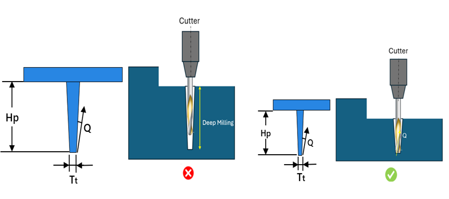

本ルールは、DFMProデータベースから選択されたミーリングカッターに基づき、リブの最小抜き勾配角をチェックします。要求されるカッターパラメータがリブ先端厚みおよび高さに適合しない場合、ルールは不合格となり、設計者が要求するカッターではリブ用金型を切削できないことを示唆します。
一般的に、金型メーカーはボールノーズテーパ、およびエンドミルカッターを用いて金型を切削します。しかし、非標準のリブ（先端厚み、高さ、抜き勾配角）が存在する場合、それらのリブは利用可能な標準の金型用ミーリングカッターでは切削できません。リブのパラメータが非標準であるため、その金型を切削するには追加のカッターが必要となり、結果としてオペレーションコストおよび金型コストが増加します。
本ルールは、モデルからリブ先端厚みとリブ高さを特定し、DFMProデータベースからカッターを選定して、以下の項目をチェックします。
樹脂部品上のリブ抜き勾配角がカッターの抜き勾配角より小さい場合、ルールは不合格となります。
リブ先端のフィレット半径がカッター半径より小さい場合、ルールは不合格となります。
リブ先端厚みおよび高さに一致するカッターが利用できない場合、ルールは不合格となります。
必要な標準カッターでリブ用金型を切削できるように、適切なパラメータでリブを設計してください。
カッター選定基準
本ルールは、リブ先端の最小厚みに最も近く、かつそれ以下の直径を持つカッターをデータベースから選定します。カッターが選定された後、カッターのフルート長（L2）が最大リブ高さに最も近く、かつそれより大きいカッターが選択されます。
DFMProでは、Cutter Databaseから、フラットエンドミルおよびボールノーズ用のカッターデータベースを構成するオプションが提供されています。

ここでは、
Hp = 抜き方向に沿ったリブの高さ
Tt = リブ先端部の厚み
Q = リブの抜き勾配角